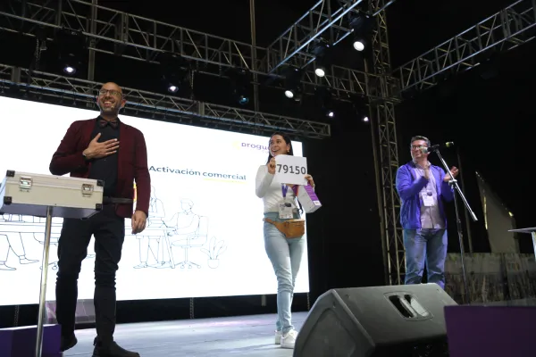

Conferencias para empresas
Conferencista para empresas: charlas motivacionales con magia en vivo
Soy mago y mentalista desde hace más de 20 años, y como conferencista uso la magia para que una idea se vea antes de explicarla. Todo el auditorio ve un efecto imposible en vivo, y desde ahí hablamos de creatividad, de comunicación o de cómo se alcanza una meta. Para congresos, convenciones y encuentros de líderes, presenciales o virtuales, en español o en inglés.

La charla
Cada efecto es el punto de partida de una idea.
La magia ocurre en vivo, frente al auditorio, y cada efecto abre una reflexión: cómo se construye la creatividad, cómo se comunica para conectar y cómo se pasa de la intención al logro.
Es el formato indicado cuando hay muchos asistentes y poco tiempo, y se busca inspirar y dejar ideas claras.
Una conferencia motivacional suele quedarse en las frases. Aquí la gente ve primero algo que parece imposible y después descubre que tenía un método. Esa es la idea que se lleva el auditorio, y la recuerda porque la vio con sus propios ojos.
Temas
Elige el tema
Conferencia de creatividad e innovación
Creatividad con método
Los magos no podemos darnos el lujo de dejar la creatividad al azar. En la conferencia muestro cómo un efecto nace de transformar otro que ya existía, con el método SCAMPER.
Conferencia de comunicación asertiva
Magia que conecta
Lo que Juan Tamariz enseña a los magos sobre la mirada, la voz y el público, llevado a cualquier persona que necesita que la escuchen.
Conferencia de superación personal
De la ilusión al logro
Así como los magos logran lo que parece imposible, tu equipo puede alcanzar las metas que hoy siente inalcanzables cuando conoce el método.
Charla o taller
¿Cuál necesitas?
Charla
Formato conferencia, con magia en vivo y sin práctica de los asistentes. Para congresos, convenciones y auditorios grandes. Presencial o virtual.
Taller
Participativo: todos aprenden, practican y presentan. Mínimo 2 horas, ampliable a media jornada, hasta 100 participantes. Ver talleres.
Preguntas
Sobre las charlas
¿Qué diferencia a un conferencista que usa magia?
Que el público no solo escucha la idea: la ve ocurrir. Cuando alguien del auditorio sostiene en sus manos algo que no debería estar ahí, el mensaje que viene después ya tiene toda su atención. Además, la magia funciona igual con el presidente de la compañía que con el practicante: nadie se queda por fuera.
¿Cuánto dura una conferencia?
Se adapta a tu agenda: puede ser una apertura corta que despierta al auditorio, una conferencia central o el cierre del evento. Cuéntame cuánto tiempo tienes en el programa y armo la charla para ese espacio.
¿Qué diferencia hay entre un taller y una charla?
La charla trabaja los mismos contenidos (creatividad, comunicación o logro de metas) en formato conferencia, sin la parte práctica en la que los participantes aprenden y presentan juegos de magia. Es ideal para congresos, convenciones y auditorios grandes. El taller es participativo: todos aprenden, practican y crean.
¿Las charlas se pueden hacer de forma virtual?
Sí, en vivo por Zoom o Teams, además del formato presencial en auditorio.
¿Para qué eventos sirve una charla?
Para congresos, convenciones, encuentros de líderes y eventos con muchos asistentes en los que se busca inspirar y dejar ideas claras en poco tiempo.
Lo que dicen las empresas
«El equipo se lleva algo valiosísimo: entender que lo que hacen diariamente en su trabajo, en su rol, es magia.»
«Todas las dinámicas que se hicieron van muy de la mano de lo que nosotros hacemos en el día a día y podemos aplicar. Muy dinámico, muy alegre. Rompió esquemas, y del grupo ninguno estuvo ausente.»
«No solamente es lo que hace un mago, sino lo que eso significa y para dónde lo están llevando.»
Contacto
Llevemos esta charla a tu evento
Cuéntame el objetivo, el número de participantes y la fecha. El formulario arma el mensaje y lo abre en WhatsApp; te respondo en menos de 24 horas con una propuesta.

- +57 305 767 9511
- nabilmentalista
- Cobertura
- Bogotá, toda Colombia y virtual